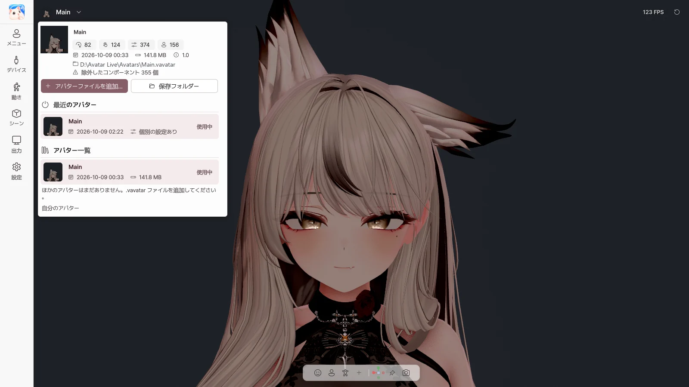

3. スタート画面とアバターライブラリ#
スタート画面#

Avatar Live を起動すると、スタート画面でアバターとデバイスを選んでから開始します。
アバター#
| 項目 | 内容 |
|---|---|
| アバターを開く… | .vavatar ファイルを開く（ウィンドウにドラッグ＆ドロップしても可） |
| 最近 / フォルダー / 読み込み済み | 最近開いたアバター / アバターフォルダーのアバター / 保存フォルダーに読み込んだアバター |
| タイルをクリック · ダブルクリック | 選択 · すぐに開始 |
| 既定に設定 | このアバターを既定のアバターにする |
| ファイルの場所 | エクスプローラーでファイルを表示 |
| 一覧から削除 | 最近の一覧からだけ削除（ファイルはそのまま） |
| 場所を指定… | 移動したファイルを指定し直す |
| 変更 / フォルダーを開く（フォルダータブ） | アバターフォルダーを変更 / エクスプローラーで開く |
状態表示：使用可能 · ファイルなし · 開けません · ★ 既定
デバイスと起動設定#
| 項目 | 内容 |
|---|---|
| カメラ スイッチ · 一覧 | 開始時に Web カメラのトラッキングをオン、使用するカメラ |
| プレビュー | カメラの映像を確認（配信中はほかの人にも見えるので注意） |
| マイク スイッチ · 一覧 | 開始時にマイク（リップシンク）をオン、使用するマイク |
| テスト | マイクの音が入っているか確認 |
| 顔 | フェイストラッキングのエンジン（自動 / MediaPipe / OpenSeeFace） |
| 手 | ハンドトラッキング（MediaPipe / Ultraleap / オフ） |
| 起動時のアバター | 毎回確認 / 前回のアバター / 既定のアバター |
| 常にスタート画面を表示 | 毎回この画面から開始 |
| ▶ Avatar Live を開始 | 選んだアバターで開始 |
セーフスタート#
Web カメラ・マイク・トラッカーなしで開始します。デバイスの問題で起動できないときに使います。 Shift を押したまま 起動し、スタート画面が表示されるまで押し続けてください。
復旧画面#
前回アバターを読み込んでいる途中で終了した場合、次回の起動時に表示されます。
| ボタン | 内容 |
|---|---|
| もう一度試す | 同じアバターをもう一度読み込む |
| 別のアバターを選ぶ | スタート画面へ |
| セーフスタート | デバイスなしで同じアバターを読み込む |
起動中にアバターを切り替える#

左上の アバター名 を押すと、アバターライブラリが開きます。
| 項目 | 内容 |
|---|---|
| アバター情報 | PhysBone · Contact · 表情パラメーター · メニュー項目の数、日付、サイズ |
| アバターファイルを追加… | .vavatar を保存フォルダーに読み込む |
| 保存フォルダー | 保存フォルダーを開く |
| 最近のアバター | 最近開いたアバターに切り替え |
| アバター一覧 | 保存フォルダーのアバターに切り替え、🗑 で削除（設定は残ります） |
| 自分のアバター | Exporter の使い方の案内 |
アバターを切り替えると、設定を保存して新しいアバターで再起動します。オンにしていた Web カメラとマイクは、そのまま再びオンになります。
スタート画面に戻る#
- 左上の ロゴ → 再起動
- 設定 › 起動時 › 再起動